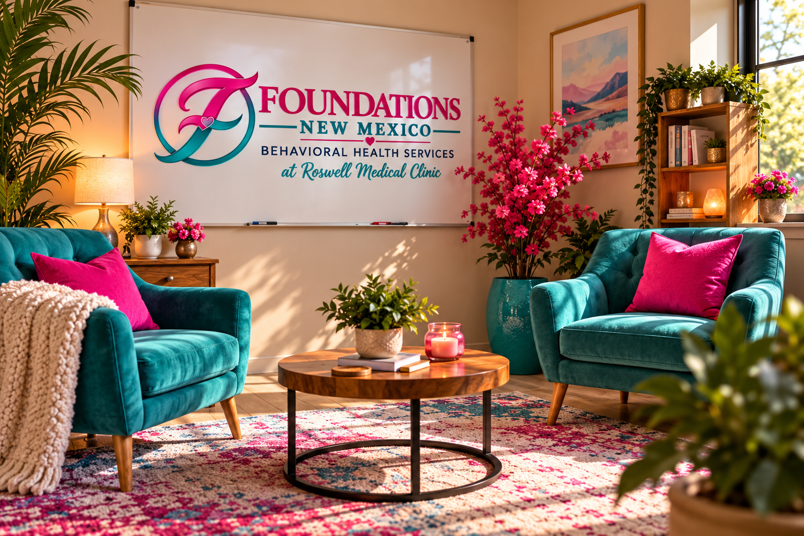

The child who says “I don’t care.”
Sometimes the words that sound like indifference are asking a much harder question: Is it safe to care out loud?
Read the storyCompassionate counseling support for children,
teens, adults, couples, and families in Roswell, New
Mexico. A place to slow down, feel understood, and
begin building forward — one honest conversation
at a time.

COUNSELING THAT FEELS HUMAN.
Life gets complicated. Sometimes it gets downright heavy. At Foundations New Mexico, you don’t have to pretend otherwise. We offer compassionate counseling for children, teens, adults, couples, and families navigating life’s difficult chapters. No judgment. No perfect stories required. Just real conversations, genuine connection, and room to move forward.
WHY FOUNDATIONS EXISTS.
Somewhere along the way, asking for help became something people felt they had to explain. At Foundations New Mexico, we believe your story deserves more than a quick answer or a one-size-fits-all approach.
Built from a shared commitment to compassion, honesty, and human connection, Foundations is a place to be met where you are — without having to pretend you’re somewhere else.
Real people. Real conversations. Room to begin again.
THE FOUNDATIONS JOURNAL.
Stories about connection, growing through difficult chapters, and the moments we almost miss.
Sometimes the words that sound like indifference are asking a much harder question: Is it safe to care out loud?
Read the storySilence can look like peace from the outside. Inside a relationship, it can tell a different story.
Read the storyCaring deeply about another person doesn’t require disappearing from your own life.
Read the storyWHEN YOU'RE READY.
Whether you’re reaching out for yourself or someone you love, request an appointment by phone or email. We’re here to listen.
To request an appointment, call us or send a general email. Please do not include symptoms, diagnoses, or other private health information in an ordinary email.